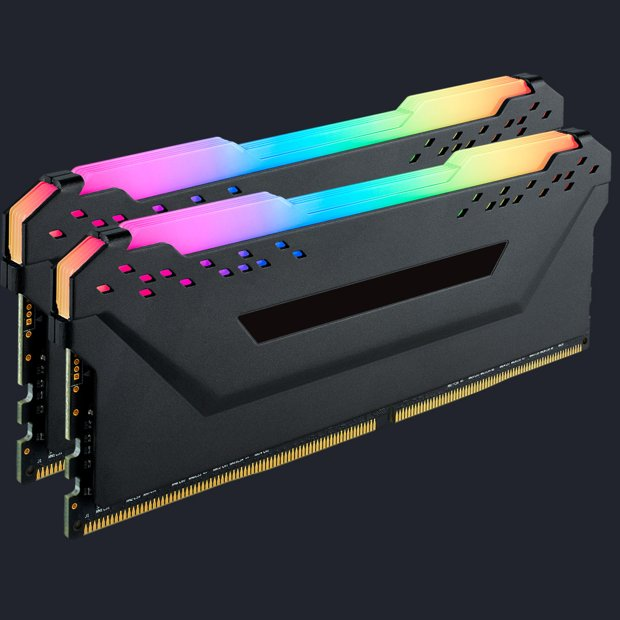

Memoria
 A sigla RAM vem do inglês “random access memory”, que pode ser traduzido para “memória de acesso aleatório”.
Esse componente é responsável por dar mais agilidade e velocidade no funcionamento geral do sistema.
Sem a memória RAM, tarefas como abrir programas e editar arquivos demorariam muito para serem realizadas. Na verdade, um computador nem liga se você não tiver memória RAM instalada.
Resumidamente, a função da memória RAM é guardar temporariamente toda a informação que o computador precisa, seja para aquele momento ou para um futuro próximo.
Isso é um fator que a diferencia de um HD, por exemplo.
Como o disco rígido foi feito para um armazenamento de longo prazo, ele demora mais para disponibilizar os dados que o usuário deseja acessar.
Todavia, os dados armazenados em uma memória RAM são apagados quando você desliga o computador. Basicamente, a memória RAM funciona como uma espaço de trabalho, mas temporário.
Voltar